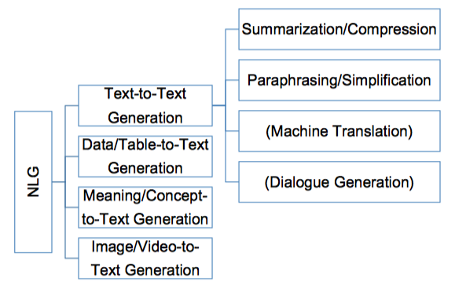
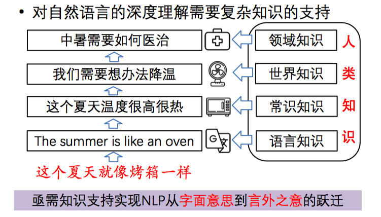
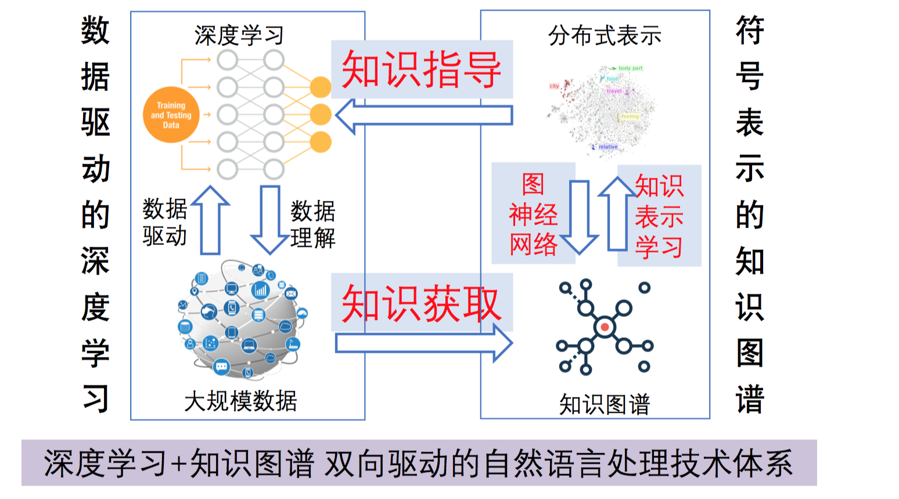

瓦砾上上周参加了第四届语言与智能高峰论坛，包括周明、刘群、刘知远等很多大拿去做了报告，私以为其中几个报告挺不错的，颇有启发。刚好最近官方放出来PPT，这里做一个总结分享~
PPT的链接：http://tcci.ccf.org.cn/summit/2019/dl.php
总的来说，这次论坛有两个关键词：知识和多模态。
刘群 - 基于深度学习的自然语言处理：边界在哪里？
刘群老师结合机器翻译领域，就NLP中DL的边界提出了三个问题：
- 深度学习解决了哪些NLP的问题？
- 还有哪些NLP问题还没被深度学习解决？
- 基于DL的NLP：边界在哪里？
1. 深度学习解决了哪些NLP的问题？
- 词语形态问题：以前需要进行词语切分，NMT不需要。
- 句法结构问题：NMT也不需要句法结构作为输入。
- 多语言问题：NMT通过中间语言方法解决了多语言翻译的问题。
- 联合训练问题：NMT端到端，避免了错误传播。
2. 还有哪些NLP问题还没被深度学习解决？
- 资源稀缺问题：深度学习需要的数据更多
- 可解释性问题：nn的不可解释性
- 可信任性问题：既然不可解释，也就很难信任
- 可控制性问题：某些人名，希望严格翻译
- 超长文本问题：长下文没法参考太长，过长翻译不准确。
- 缺乏常识问题：需要图谱介入，也许能解决
前面两部分，刘群老师结合了机器翻译的发展，对比RBMT、SMT和NMT的区别，说明了DL解决了的以及未解决的NLP的问题，这两部分PPT讲的很详细也没什么需要思考的内容，建议大家看一下原PPT。
3. 边界？
这一部分比较引发思考。
1. 数据边界
2. 语义边界
人工智能之所以能在围棋等项目上获得巨大的成功，一个很重要的原因是：这些问题都是well-defined 的。在这些问题中，我们队客观世界有着精确的建模，系统中所有的操作都在这个世界模型中。类似于智能音箱的产品之所以成功，也是因为它有着明确的任务集。
但是，事实上，大部分的自然语言模型只是在建模词语符号之间的关系，模型的“脑海”中是并没有一个属于自己的客观世界模型的，所以它其实并没有能真正地去理解语言。
一个可能的解决方法是知识图谱，其可以显性地包含大量的知识，避免一些常识性的错误，但是现在知识图谱并没能有一个大规模成功的应用。
刘群老师认为：理想的nlp系统，需要有一个描述客观世界的语义模型，类似于一种隐状态，知识图谱是这种模型的一种可能的形式。
3. 符号边界
人类可以利用语言进行逻辑推理，神经网络却无法准确进行逻辑推理。一些简单的利用有限状态自动机可以解决的问题（数词、年份、网址），神经网络却很难准确地学习，这也是实用的nlp系统离不开规则的原因。
4. 因果边界
人类对于客观世界发生事情的因果关系，有着明确的理解和判断，但是神经网络，只是基于统计数据找到的“规律”，并不能理解真正的因果关系。
万小军：Recent Advances in NaturalLanguage Generation
瓦砾以前做过Question Generation，深感其中的不易，evaluation没有统一的标准，数据常常也不如翻译任务多。不过由于NLG任务本身真的很酷，一直还是对NLG方向很感兴趣。这次万老师讲了一些该领域最近的进展和热点方向，每个方向也都分享了相应的论文干货。
NLG的分类

NLG的趋势
- Creative Text Generation （诗歌、比喻）
- Controllable Text Generation（固定长度、句法）
- Generating Texts with Special Attributes（风格迁移）
- Cross-Modal Text Generation（跨模态：图像视频的标题字幕、评论的生成）
- Question Generation（问题的生成）
万老师的ppt也很详细，由于启发性的东西不多，瓦砾就不复制粘贴了，感兴趣的读者可以看一下ppt，了解一下当下NLG能做什么，未来会怎么发展。
刘知远：知识计算与语言理解
微博上一直关注刘老师，仰慕已久，这次听到真人的报告，确实条理清晰，鞭辟入里。
刘老师关于深度学习和知识如何相辅相成，共同驱动NLP任务，做了报告。
深度学习的挑战
深度学习能够高效学习语言单元间复杂的语义关联，因此已经能解决很多任务，但是同时，也面临很多挑战，举个例子：

从“夏天像烤箱一样”过渡到“中暑如何治疗”，对有专业知识的人类来说，非常的自然。但对于深度学习模型来说，却有着一道难以逾越的沟壑，而知识也许就是跨越这道沟壑的桥梁。
然后刘老师祭出了一张笔者认为略精髓的图，很清楚地阐述了深度学习和知识图谱之间的关系以及其中涉及的技术方向。刘老师在后面也放了他们实验室做的一些成果，感兴趣的读者可以去看ppt里的paper list。

总结
这次短短一天的参会，收获颇丰，尤其是刘群以及刘知远老师的介绍。以后有机会瓦砾也会深挖一些知识图谱方面的技术方向，也希望可以和大家多多交流。